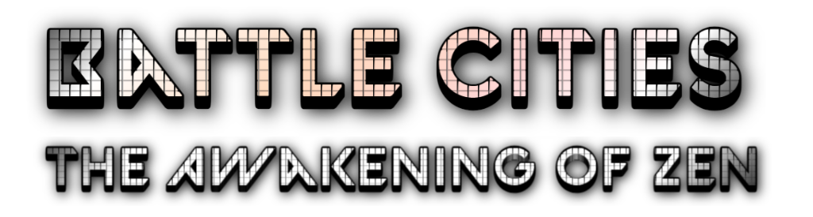

Download
A superintelligence tore the solar system apart on its way out of the galaxy. What was left of humanity gave up its body for a copy of itself, sealed in shielded towers beneath Alfa Centauri, while the machines it had built finished the job overhead.
Millennia later the towers still stand, the science has been lost and relearned, and the minds inside have gone back to war with each other. You own one of them.
- Cityscapes held by alliances behind one wall
- Drop-ship invasions, and a beachhead to hold before your city can follow you in
- A battle speech over the spaceport, in hologram, once a day
- Characters with unbounded memory — they remember what you did, and for how long